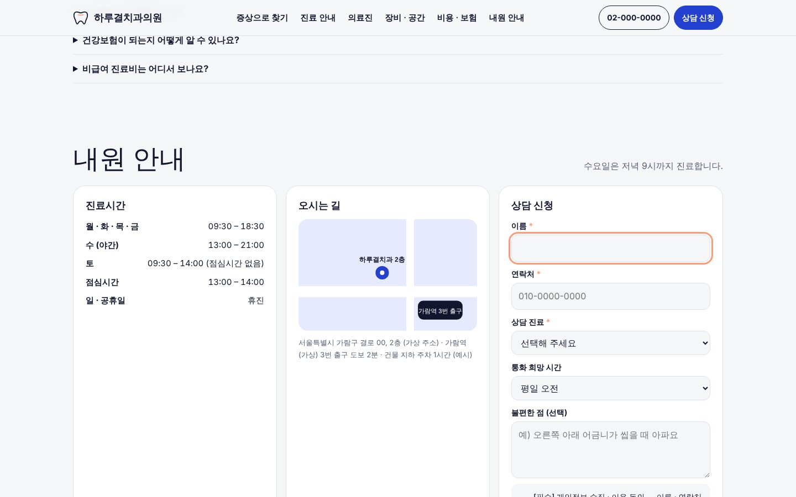
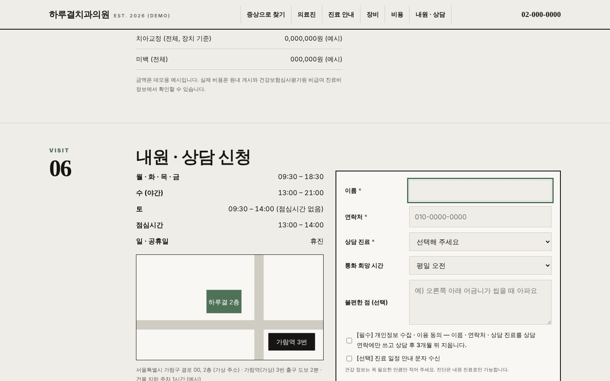
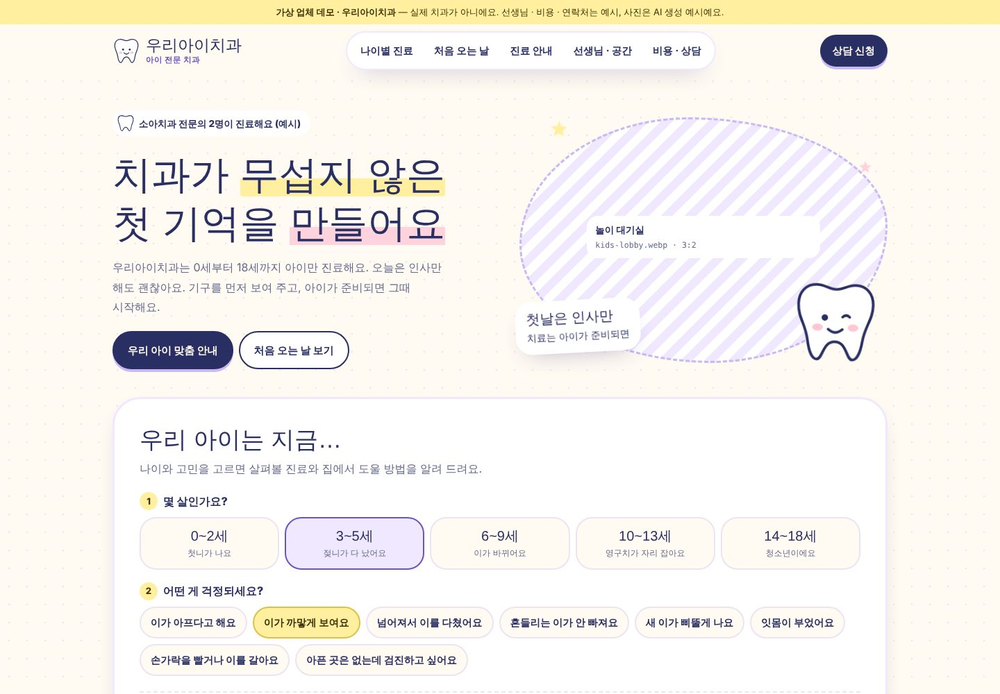

조합 1 선택 반영(이슈 #91) · 가상 업체 데모 · 2026-10-20
같은 증상 안내,
세 가지 다른 첫인상.
세 시안 모두 증상에서 시작하는 진료 안내형입니다. 불편한 부위와 증상을 고르면 살펴볼 진료 · 담당 원장 · 과정 · 건강보험 · 주의사항이 나오고, 그 내용으로 상담 신청(L2)을 채웁니다. 요청하신 모바일 하단 바로가기 4버튼(전화 · 상담 신청 · 진료시간 · 오시는 길)을 세 시안에 모두 넣었습니다.
사진: 원장 프로필 4장 · 의료기기 4장 · 공간 2장은 사진 칸만 잡아 두었습니다. GPT 사진 지시서의 파일 이름으로 images/에 넣으면 세 시안에 바로 표시됩니다.

A · Arch · 추천
포슬린 · 코발트 · 피치. 위 · 아래 치아 배열을 그린 치아 지도를 누르는 분할형. 결과에 맞는 진료 카드가 강조됩니다.
시안 열기 →

B · Chart
웜그레이 · 잉크 · 세이지. 치과 치식 번호표(영구치 32 · 아이 치아 20)를 누르는 그리드 지면형. 원장 소개가 지면 기사처럼 펼쳐집니다.
시안 열기 →

C · 우리아이치과 · 완성
크림 · 라일락 · 네이비 · 레몬. 아이 전문 치과로 바꿔 6페이지로 완성. 나이와 고민으로 찾고, 진료마다 아이에게 건넬 말을 함께 안내합니다.
사이트 열기 →
디자인 지문
| 시안 | layout | hero | typePair | palette | signature |
|---|
| A · Arch | split | interactive tooth map | Pretendard + Instrument Serif | porcelain · cobalt · peach | 위 · 아래 치아 지도 → 진료 카드 강조 |
| B · Chart | swiss-grid editorial | statement (serif) | Noto Serif KR + Pretendard | warm gray · ink · sage | FDI 치식 번호표 선택 |
| C · Bloom | organic | split-media (공간 사진) | Gowun Dodum + Noto Sans KR | lilac · navy · lemon | 증상 칩 → 부위 아이콘 → 결과 카드 |
의료진 · 비용 · 연락처는 예시이며 사진은 AI 생성 예시로 표기합니다. 효과 보장 · 할인 · 전후 사진 · 실적 수치는 쓰지 않았고, 진료마다 주의사항 · 부작용을 고지합니다(rules/medical.md). 상담 폼은 접수하지 않는 데모입니다.
완성할 시안 선택
레퍼런스 비교 보고서 ↗ · 제출한 조합 보기 ↗